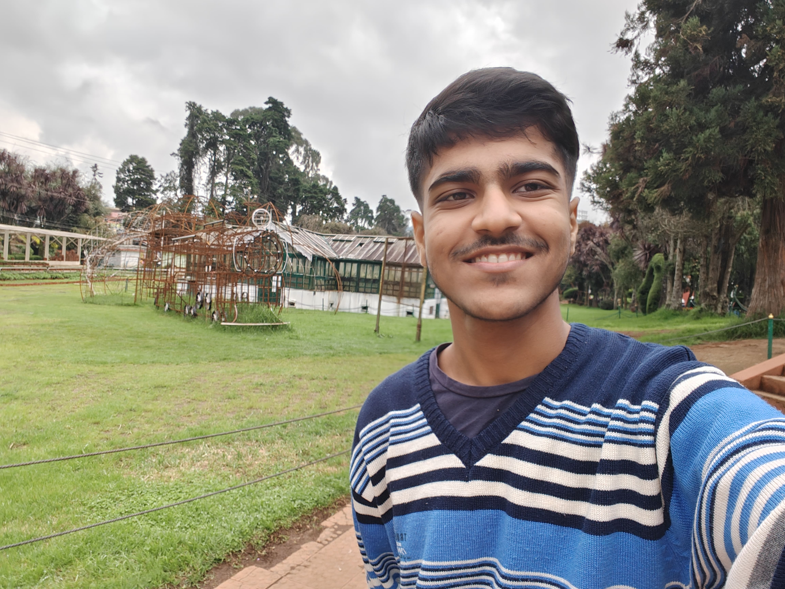

 Hello! My name is Keshav Gujrathi. I am a 19-year-old engineering student currently exploring the vast field of Data Science and Machine Learning. My curiosity drives me to experiment, learn, and solve problems that matter. With a knack for breaking away from the herd, I strive to make unique contributions.
From a young age, I have always been intrigued by the power of technology. Be it building small projects or contemplating startup ideas, I enjoy taking on challenges that push my boundaries. My interests lie in exploring creative solutions that simplify complex problems and make life better for everyone. Adaptability and resilience are my greatest strengths, and they help me stay ahead of the curve.
Apart from academics, I love engaging in conversations about new technologies and staying updated with advancements in AI and machine learning. I believe in continuous growth and learning, and I aim to use my knowledge to create impactful solutions. Whether it is coding, brainstorming, or learning a new skill, I am always ready to take the plunge.